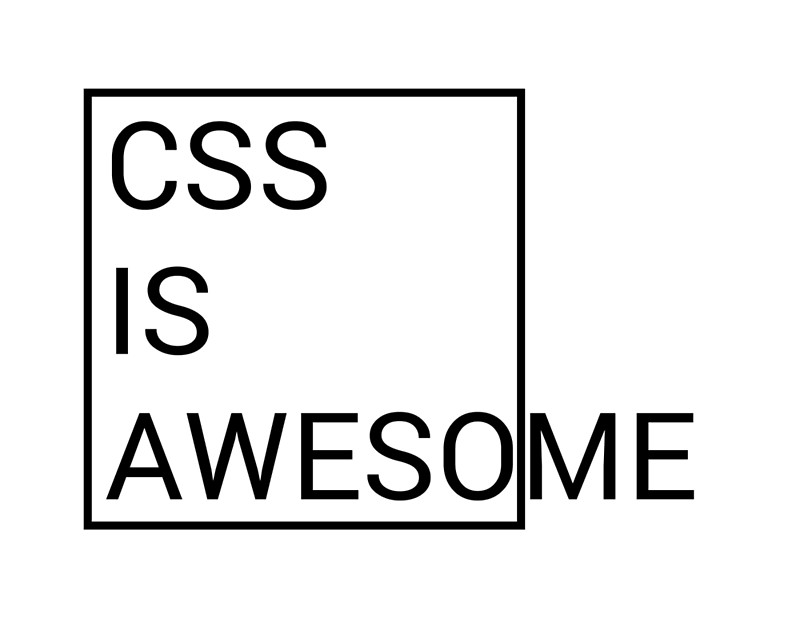

Lab 3
- Exercise 3.1
-
Node.js is a JavaScript framework. Express.js is an extension for Node.js that makes it easier to write webservers.
-
The file "package.json" stores information about the javascript package such as the title, license, location of files, help information, authors, dependencies, and a lot more.
- Exercise 3.2
-
These files are "static" because there isn't any interactive content. Nothing changes on the page after they are served to the browser.
-
b. No, the hello world page is no longer served because I am overriding it with index.html
